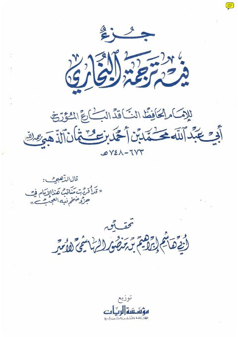

Downloads need an internet connection.
جزء فيه ترجمة البخاري
Authors: شمس الدين محمد بن أحمد بن عثمان الذهبي
Editors: إبراهيم بن منصور الهاشمي الأمير
Publishers: مؤسسة الريان
**▫️ العنوان: جزء فيه ترجمة البخاري** ▪️ المؤلف: #شمس_الدين_محمد_بن_أحمد_بن_عثمان_الذهبي ▫️ المحقق: #أبي_هاشم_بن_منصور_الهاشمي_الأمير ▪️ الناشر: #مؤسسة_الريان ▫️ تاريخ النشر: 1423هـ 2002م ▪️ بلد النشر: جدة، #السعودية ▫️ الطبعة: 1 ▪️ عدد الأجزاء: 1 ▫️ الصفحات: 74 ▪️ نوع الوعاء: #كتاب ▫️ التصنيف الرئيسي: #التراجم_والأعلام ۪